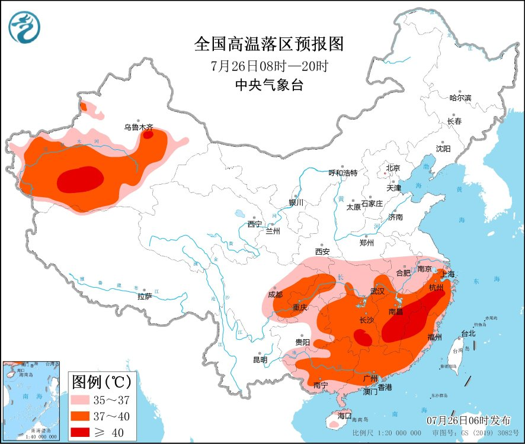
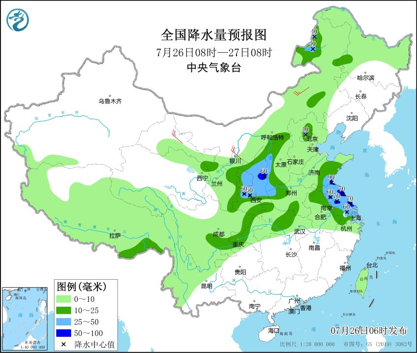
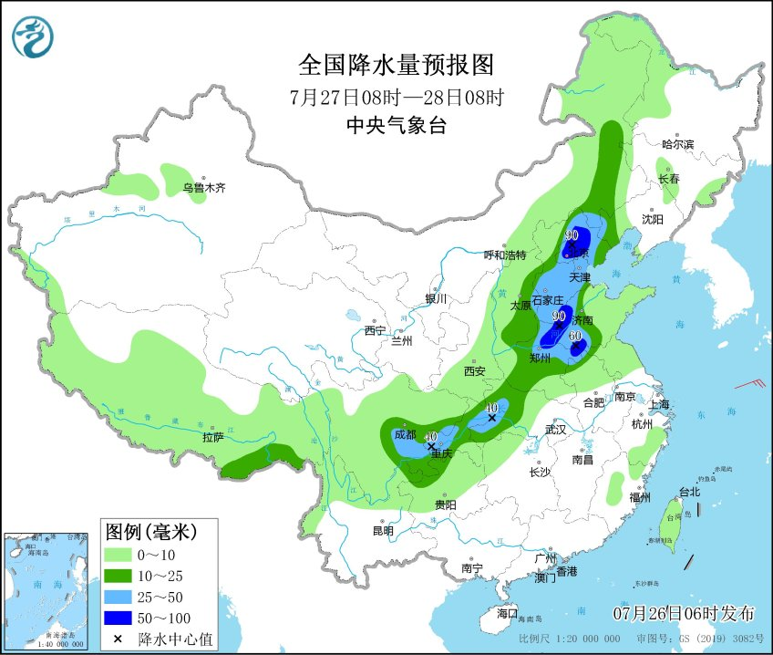
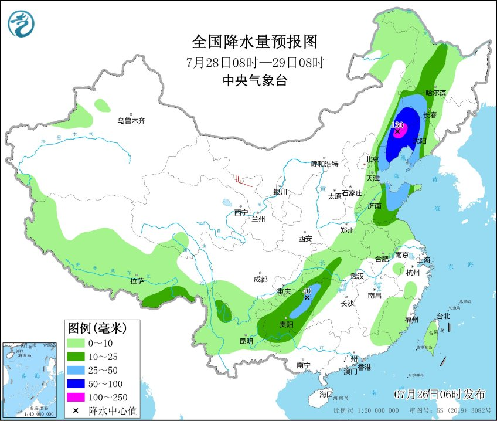
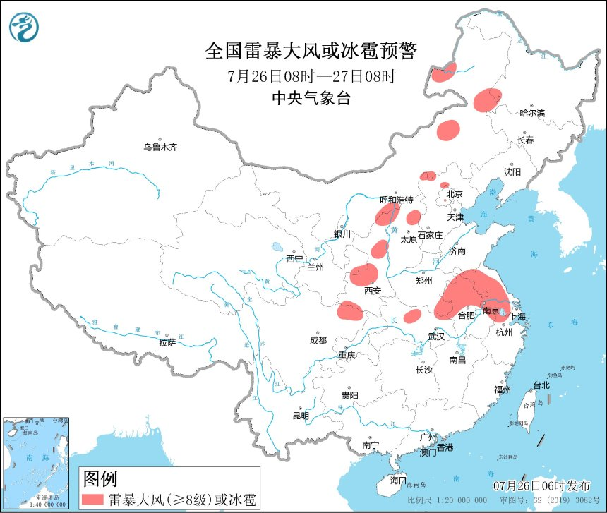

7月15日以来，西南地区东部及江南、华南等地受高温炙烤， 据气象监测统计显示，全国共51个国家气象观测站点的日最高气温突破历史极值， 其中，昨天有12个站点突破当月历史极值，贵州榕江（40℃）和岑巩（39.6℃）、广 东五华（39.6℃）、福建三明（41.8℃）等4个站点日最高气温突破历史极值。
中央气象台预计，未来10天，南方地区仍有大范围持续性高温天气，浙江 、福建、江西、湖南等地最高气温可达40℃或以上。此外，新疆盆地地区、内 蒙古西部、甘肃西部等地也将多高温天气。
中央气象台今晨继续发布高温橙色预警：预计今天白天，江汉、江淮、江南、华南 和四川东部、重庆、贵州东部以及新疆南疆盆地等地有35℃以上高温天气，其中， 浙江西南部、福建西北部、江西东部和南部、湖南东南部以及南疆盆地等地的部分 地区最高气温可达40℃以上。
降水方面，昨天陕西、河北、河南等地出现明显降雨，其中河南郑州、南阳、驻马店， 以及河北衡水、石家庄等地局地出现大暴雨。上述部分地区还伴强对流天气，河南、 山西局地出现12~13级雷暴大风并伴有冰雹。
预计26日至28日，北方地区将迎来一次较明显的降雨过程，西北地区东部、华北东部、 东北地区西南部等地部分地区有中到大雨，其中，陕西中南部、北京中北部、河北南部、 江苏中北部等地局地有暴雨，辽宁西部等地局地有大暴雨。
  中央气象台今晨继续发布强对流天气黄色预警：预计今天（26日），内蒙古东北部、 陕西、山西、河北中北部、北京南部、河南东部、安徽、江苏、上海、湖北北部等 地部分地区有短时强降水、8~10级雷暴大风或冰雹等强对流天气。
气象专家提醒，预计27日至28日，受降水影响，四川、重庆、湖北、湖南西部等地高 温有所缓解，江西、浙江、福建、广东等地高温持续。正值暑假旅游高峰期，公众外 出游玩时务必做好防暑降温措施，避免白天长时间在户外行走，谨防中暑。此外，苏 皖北部等地需密切关注天气变化，警惕雷暴大风或冰雹等强对流天气，主动了解官方 发布的预报预警信息，合理安排出行。